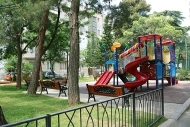
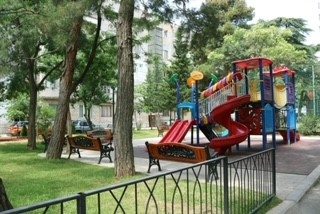

Green Gentrification Projects
Tbilisi New Yard
Project Summary
There is an ecological catastrophe in one of the biggest districts in Tbilisi – Saburtalo. The densely populated area with the high raised buildings has no environmental balance. Old greenery in the area is almost destroyed or degraded, lawns trampled, vegetation littered and lined with cars. Dusty and fumes courtyards are an unpleasant place to stay for mums with prams, the elderly and children.
In each high-rise block courtyard resides around 1,000 people, one-third of which are children. The latest study confirms the high importance of vegetated yards and equilibrium in the balanced ecological ecosystem for teens' physical and mental health. The historically social environment in the courtyards played a crucial role in the shaping of Georgian personality. Loss of interactive social areas in the yards entails a surge of colonial aggression.
Residents of apartment blocks believe that the local administrative body of Saburtalo district should take care of green gentrification of the yard areas. However local administration has no budget for the landscaping. The green area degradation process continues.
Non-governmental organisation "Child and Environment" initiated the project of green gentrification of five courtyards in Saburtalo district by joining efforts of apartment block residents, the local administration and the landscape design and gardening organisation –"Urban Farm Gardenia". By doing so, they hope to improve the quality of life for children residing in the area.
Urban greening of one or two yards won't trigger the restoration of the ecologic balance in the area, with the length of seven kilometres. However, it will still have a localised impact. However, yard vegetation projects should start simultaneously in several district locations to achieve positive socio-ecological implications of urban greening. A new green area will be walking distance for mothers with children and older generations from un-gentrified yards. One of the main selection criteria for the courtyards will be the presence of resident-volunteers, who will be willing to participate in required works and project co-financing. The proposed project is aligned with the Constitution of Georgia (Article 36 para. 3,4,5) and the state programs.
Green gentrification project 'Tbilisi New Yard' promotes a dialogue between public and government bodies, with the primary objective of improving the ecological ecosystem and involving youths, women and other social groups in the vegetation of the Saburtalo district. This makes it a perfect candidate for the GEF Small Grants Program funding.
Image Gallerry

 


Results
Green gentrification of the three yards – in a total of 2300 sq metres in Saburtalo District was carried out. This project improved the quality of life for more than 600 households.
The residents began to trust the Administrative body and cooperate with them more. Active involvement of kids in the project implementation speeded up the green gentrification process in the yard, attracted attention, and facilitated the involvement of older residents.
The “New Yard Project” fostered an interest in green gentrification activities in the city. The Mayor of Tbilisi proposed green gentrification in all the courtyards of the city.
Learning Garden
Project Summary
Fifty years ago, every school in Tbilisi had a learning garden with a greenhouse. Today, green areas in the schools are either completely degraded or covered by concrete. Schoolchildren have very little interaction with nature during school hours and minimal understanding of environmental risks concerning the food industry. No gardening skills are taught or developed during school hours.
The idea of the project is to create new modern learning gardens in three schools across Tbilisi. Each learning garden will be tailored according to chosen school territory. The objective is to create a trendy green area consisting of raised vegetables' beds, fruit trees, and a small greenhouse. Each learning garden will also have a tent with a seating area for conducting the classes. Additionally, there is a plan to create a rooftop garden at each school. Please note that the rooftop part of the project would require experts' sign off on the reliability of the roof construction. If the evaluation is positive, the roof area of circa 30 sq. m2 will be greenly gentrified too (That would encompass a four-layer coating; waterproofing, filter, drainage, soil substrate) with extensive greening on top.
The learning garden will be an environmentally friendly and safe outdoor classroom for pupils to develop healthy habits and acquire theoretical and practical knowledge of organic gardening and good nutrition. Organic vegetables from the school gardens will be delivered to the canteen of each school and added to the daily menu free of charge. The proposed project is aligned with the Constitution of Georgia (Article 36 para. 3, 4, 5) and the state programs.
Project «Learning Garden» promotes a dialogue between public and government bodies. The main objectives are to create a modern green area and educate children about organic gardening, making it a perfect candidate for GEF Small Grants Program funding.
Image Gallerry


Results
Three learning gardens were created, including a roof garden. With a total area of the green gentrification was 1,530 square meters:
- Child & Environment center - 520 square meters of land gentrified, with 26 trees and 125 bushes and 150 sq. m of a lawn.
- School # 161 – 700 square meters of land gentrified, with 25 trees, 170 bushes and 200sq.m of a lawn.
- The First Experimental School - 270 square meters of land gentrified, with 23 trees, 133 bushes, and 50 sq. m of a lawn. Additional 40sq.m roof garden was gentrified, with three trees and 20 bushes.
The immediate results are the following:
- Three schools have their outdoor classrooms (learning gardens), fully equipped with tools for planting and growing plants.
- Children received new skills and knowledge, teachers and school - a new direction of activity.
- The project participants received a unique experience of successful practice, in the extreme conditions of a pandemic.
- Schools are provided with fully equipped gardens to conduct various lessons outdoor.
- All project participants received positive energy and emotions from the outdoor activities, which is good for mental health.
Polytechnical Garden
Project Summary
The project is dedicated to the 100th anniversary of the Polytechnical University. The idea of the project is to create a green gentrified co-learning open space spots for the Polytechnical University. We suggest forming modern park zones at three different areas of the university. Specifically: :
- The Internal Students park with the 2000 square meters space;
- The Parter park in front of the Administrative Building of the university;
- The Cascading park territory in front of the university building #1.
Image Gallerry
Results
Work In Progress